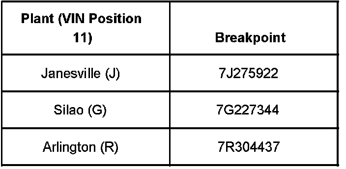
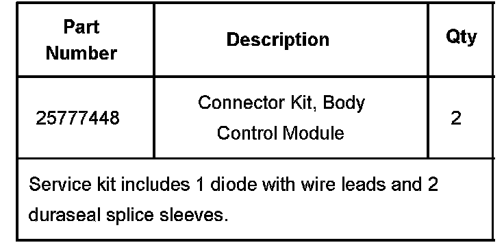
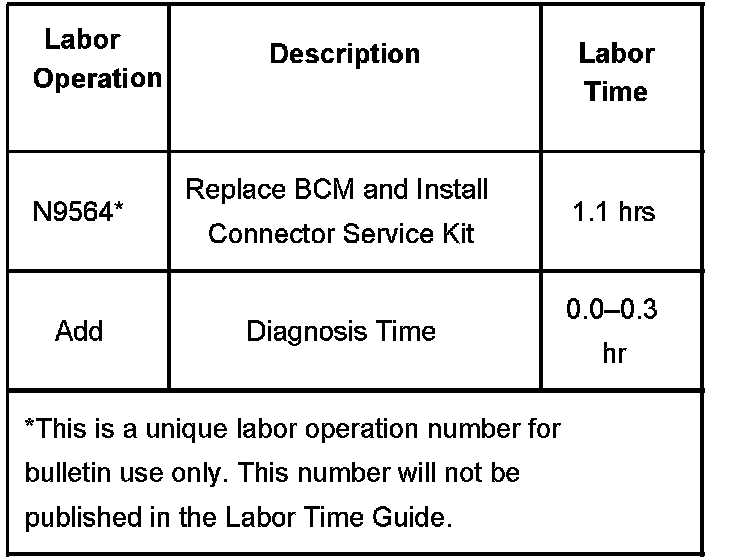

Electrical - Various Electrical Malfunctions
Bulletin No.: 07-08-49-001Date: January 18, 2007
TECHNICAL
Subject:
Various Electrical Concerns - Hood Open Message Displayed, Door Locks Inoperative, Brake Warning Lamp On (Replace BCM and Install Connector Service Kit)
Models:
2007 Cadillac Escalade, Escalade ESV, Escalade EXT
2007 Chevrolet Avalanche, Suburban, Tahoe
2007 GMC Yukon, Yukon Denali, Yukon XL, Yukon Denali XL

Built Prior to the VIN Breakpoints shown.
Condition
Some customers may comment on various electrical concerns. Some of the conditions that may be present are:
Hood Open Message Displayed in DIC
Door Locks Inoperative
Brake Warning Lamp On
Cause
These conditions may be due to the engine cooling fans inducing a voltage spike that damages the BCM internally.
Correction
Replace the BCM and install connector service kit, P/N 25777448, at the BCM to prevent conditions from reoccurring. Use the service procedure listed below.
Remove the push pin retainers and the left side closeout/insulator panel.
Remove the retaining screws and the steering column opening filler panel.
Remove the retaining bolts and the driver knee bolster.
Disconnect the BCM connectors.
Remove the BCM from its mounting bracket.
Install the new BCM to its mounting bracket.
Remove the BCM wiring harness clip to allow for slack.
Install diode # 1.
Locate BCM connector C4 (black).
Open the harness by removing the tape.
Locate the pink/black wire, circuit 109, connector pin 17.
Cut the wire approximately 25 mm (1 in) up from the connector end.
Splice in the diode using the supplied duraseal splice sleeves. Red lead wire (+) goes toward BCM.
Shrink the insulation around the splice using a heat touch.
Tape the diode to the harness using electrical tape.
Install diode # 2.
Locate BCM connector C5 (brown).
Open the harness by removing the tape.
Locate the purple wire, circuit 5531, connector pin 15.
Cut the wire approximately 25 mm (1 in) up from the connector end.
Splice in the diode using the supplied duraseal splice sleeves. Red lead wire (+) goes toward BCM.
Shrink the insulation around the splice using a heat touch.
Tape the diode to the harness using electrical tape.
Install the BCM wiring harness clip.
Connect the BCM connectors.
Install the driver knee bolster and retaining bolts.
Tighten
Tighten the bolts to 2 N.m (18 lb in).
Install the steering column opening filler panel and retaining screws.
Tighten
Tighten the bolts to 2 N.m (18 lb in).
Install the left side closeout/insulator panel and push pin retainers.
Program the BCM. Refer to the Body Control Module (BCM) Programming/RPO Configuration in SI.

Parts Information
Warranty Information

For vehicles repaired under warranty, use the table.

Disclaimer